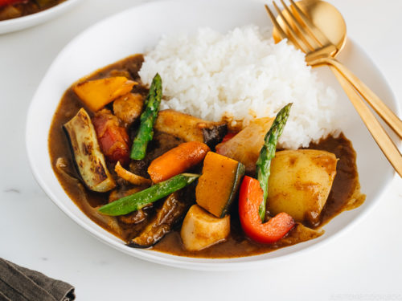

Riso al curry e cocco
Torna alle altre ricette

Tempo di preparazione: 10 minuti
Tempo di cottura: 30-35 minuti
Ingredienti per 6 porzioni
- 2 cucchiai di brodo vegetale
- 1 cipolla media, a dadini
- 1 peperone verde grande, a dadini
- 2 cucchiai di aglio tritato
- 2 cucchiaini di cumino in polvere
- 1 barattolo da 450g di fagioli pinto o borlotti (scolati e sciacquati)
- 1 litro d'acqua
- 1 barattolo da 400g di latte di cocco light non dolcificato
- 180g di spinaci freschi, oppure una confezione di spinaci surgelati scongelati e scolati
- 450g di riso integrale
- q.b. sale marino
Preparazione
- Scaldate 2 cucchiai di brodo vegetale in una pentola grande e cuocete a fuoco medio-alto le cipolle, i peperoni e l'aglio finché saranno teneri. Aggiungete il cumino e i fagioli.
- Aggiungere l'acqua, il latte di cocco, gli spinaci e il riso. Portate ad ebollizione e poi riducete la fiamma al minimo e coprite. Cuocete per 30-35 minuti, girando ogni 7-10 minuti finché il riso sarà cotto.
- Aggiustate di sale e servite ben caldo.
Torna alle altre ricette